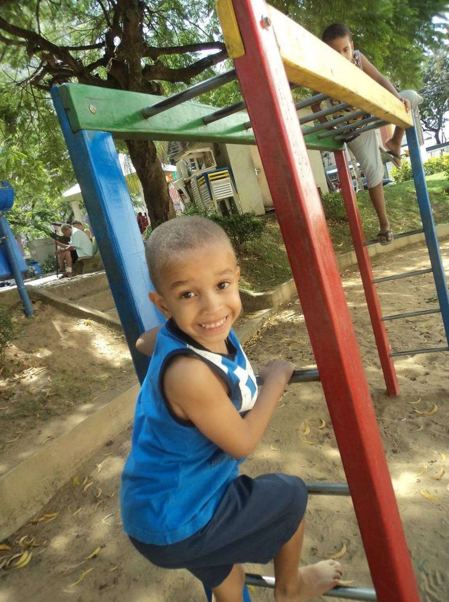
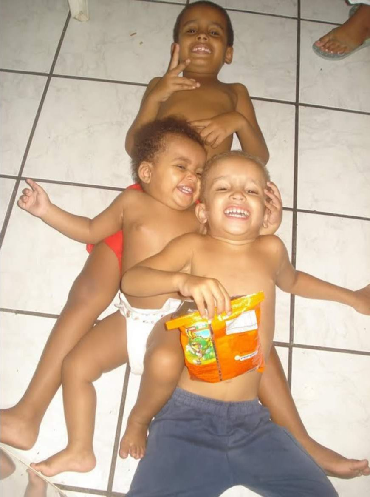
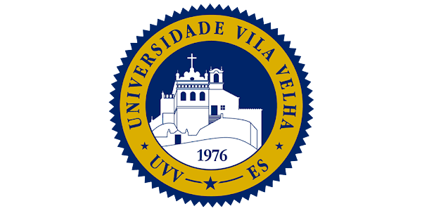

Meu nome é Henri Souza Dias, tenho 18 anos, nasci e moro em Vila Velha (ES). Atualmente curso Ciência da Computação na UVV, após dois anos de preparação intensa para o ENEM. Além dos estudos, também trabalho em Vitória, o que tem sido uma experiência importante para meu desenvolvimento profissional.
Sou apaixonado por tecnologia e estou pronto para aprender cada vez mais, pois apesar da minha motivação ter nascido por interesses financeiros, o que me move atualmente é a paixão pela área, busco aprender tudo o que o curso tem a oferecer e implementar da forma mais completa possível para poder resolver qualquer problema.
Se quiser saber mais sobre mim, continue explorando esta página!

2- "Vida pessoal"
Atualmente, moro com minha mãe no bairro Araçás, em Vila Velha, e costumo passar os finais de semana com meu pai, que vive também em Vila Velha, no bairro Jardim Marilândia. Tenho dois irmãos sanguíneos, com quem compartilho grande parte do meu tempo nesses encontros familiares.
Entre meus hobbies favoritos estão tocar flauta, ler, jogar videogame e praticar exercícios físicos — atividades que me ajudam a manter o equilíbrio entre mente e corpo. No entanto, esses são apenas alguns entre muitos outros interesses que cultivo ao longo do tempo. Se quiser conhecer mais sobre mim e minhas paixões, é só continuar até o final da página!


3- "Vida academica"
Dica: pausar áudio caso queira ouvir qualquer um dos vídeos.
Atualmente curso Ciência da Computação na Universidade Vila Velha (UVV), onde pretendo permanecer até 2029. Minha trajetória até aqui foi marcada por diversas experiências escolares.
No Ensino Fundamental I:
1º ao 3º ano: Colégio Praia da Costa (CEPC)(2013-2015)
4º ano: Colégio Duque de Caxias (CDC)(2016)
5º ano: Colégio Albert Einstein (CEAE)(2017)
No Fundamental II:
6º ano: Centro Educacional Santa Bárbara (CESB)(2018)
7º ano: SESI(2019)
8º ano: Colégio Erlach(2020)
9º ano: Nice de Paula(2021)
Já o Ensino Médio completo foi feito na EEEM Professor Agenor Roris, onde me dediquei aos estudos para o ENEM, o que me garantiu a vaga atual na UVV.
4- "Vida Profissional e Planos Futuros"
5- Extras:
meus hobbys/habilidades
Tocar flauta
Ler
Fazer Exercícios
Canoagem havaíana
ouvir música
Práticar Japonês
Jogar Vídeo Game
Minhas matérias da faculdade (1° período)
Construção de Software para Web (desenvolvimento de sites utilizando HTML e CSS)
Design e desenvolvimento de Banco de Dados (Parte conceitual e lógica da criação de um banco de dados)
Experiência e Interface com o Usuário (Foca na usabilidade e eficiência na navegação de uma página)
Fundamentos de Tecnologia da Computação (Foca no entendimento do curso no geral)
Lógica para Computação (Foca no desenvolvimento do desenvolvimento do pensamento lógico para computação)
Textos Cíentificos (Aprender a escrever artigos cíentificos e fazer pesquisas)
Atualmente trabalho na Make Your Bank, uma fintech especializada na criação de bancos digitais, oferecendo tanto soluções White Label (modelos prontos) quanto Private Label (personalizados conforme a identidade do cliente).
Atuo como SDR (Sales Development Representative), sendo responsável pelo atendimento e qualificação de leads, com o objetivo de identificar os clientes com maior potencial de fechamento de contrato.
Estou bastante satisfeito com essa experiência e com o que tenho aprendido na área comercial, é um ótimo começo de carreira profissional, mas no futuro pretendo direcionar minha carreira para a área de desenvolvimento, com minha meta sendo um trabalho na Microsoft ou na Google, apesar disso ainda reconheço e valorizo minhas habilidades como SDR. Ínclusive, caso esteja interessado em ser um dos meus primeiros clientes, pode solicitar um serviço de construção de site em "Contato" e conferir os preços em "Serviços". Consigo criar sites de lojas, academias, padarias, times esportivos e muito mais.